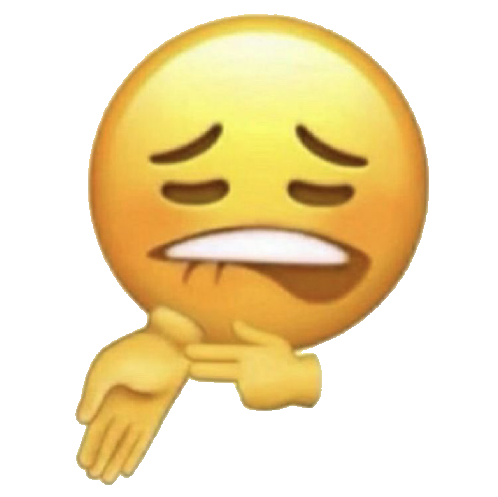
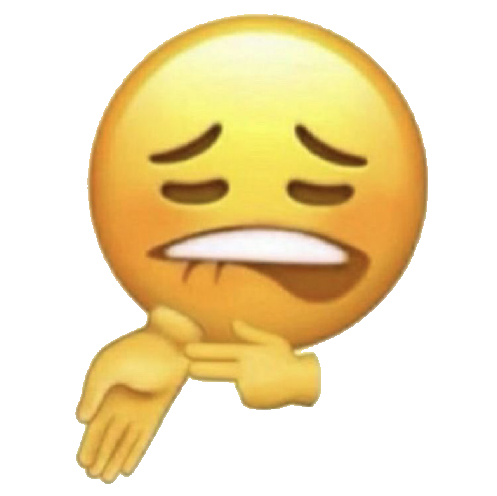

Anime de gen Aventuri:
NARUTO
Cu doisprezece ani în urmă, Bestia Cu Nouă Cozi ce reprezenta o vulpe atacă satul ninja Konohagakure (cunoscut drept Konoha sau Satul Ascuns între Frunze). Destul de puternic pentru a provoca tsunami și a nivela munții cu o rotire a cozii sale, instaurează haosul și măcelărește mulți oameni, până când liderul satului Konoha – al Patrulea Hokage – își sacrifică propria viață pentru a sigila vulpea în corpul nou-născutului Naruto ( care era fiul sau ). Al Patrulea Hokage, care a fost sărbătorit ca erou pentru sigilarea demonului, dorea ca Naruto să aibă parte de același respect din partea lor fiind "recipientul" în care demonului Vulpe este sigilat. Cu toate acestea, satul Konoha îl evită, privindu-l pe Naruto ca pe însuși demonul și tratându-l necorespunzător de-a lungul copilăriei sale. Al Treilea Hokage decretează ca nimeni să nu dezvăluie nimănui despre atacul Vulpii, nici măcar propriilor copii. Totuși, acest lucru nu i-a oprit să îl trateze ca pe un proscris, Naruto crescând orfan, fără prieteni și fără a fi recunoscut. Nu putea forța oamenii să se împrietenească cu el, atrăgând atenția asupra sa în modul lui propriu: farse și pozne. Acest lucru se schimbă după ce Naruto devine absolvent al Academiei Ninja, folosind Tehnica Umbrei, o tehnică dintr-un pergament interzis, pe care a fost păcălit să-l fure pentru a își salva profesorul, Iruka Umino, de renegatul Mizuki.
Cu doisprezece ani în urmă, Bestia Cu Nouă Cozi ce reprezenta o vulpe atacă satul ninja Konohagakure (cunoscut drept Konoha sau Satul Ascuns între Frunze). Destul de puternic pentru a provoca tsunami și a nivela munții cu o rotire a cozii sale, instaurează haosul și măcelărește mulți oameni, până când liderul satului Konoha – al Patrulea Hokage – își sacrifică propria viață pentru a sigila vulpea în corpul nou-născutului Naruto ( care era fiul sau ). Al Patrulea Hokage, care a fost sărbătorit ca erou pentru sigilarea demonului, dorea ca Naruto să aibă parte de același respect din partea lor fiind "recipientul" în care demonului Vulpe este sigilat. Cu toate acestea, satul Konoha îl evită, privindu-l pe Naruto ca pe însuși demonul și tratându-l necorespunzător de-a lungul copilăriei sale. Al Treilea Hokage decretează ca nimeni să nu dezvăluie nimănui despre atacul Vulpii, nici măcar propriilor copii. Totuși, acest lucru nu i-a oprit să îl trateze ca pe un proscris, Naruto crescând orfan, fără prieteni și fără a fi recunoscut. Nu putea forța oamenii să se împrietenească cu el, atrăgând atenția asupra sa în modul lui propriu: farse și pozne. Acest lucru se schimbă după ce Naruto devine absolvent al Academiei Ninja, folosind Tehnica Umbrei, o tehnică dintr-un pergament interzis, pe care a fost păcălit să-l fure pentru a își salva profesorul, Iruka Umino, de renegatul Mizuki.

ONE PIECE
Un băiat numit Monkey D. Luffy, inspirat de către eroul copilăriei sale, "Red Haired" Shanks, pornește într-o călătorie pentru a găsi legendara One Piece, și a deveni noul Rege al Piraților. Pentru a săvârși acest lucru, el trebuie să ajungă la capătul celui mai periculos ocean din lumea "The Grand Line". Luffy comandă echipajul Piraților Strawhat mai întâi pe apele din East Blue iar apoi prin Grand Line. El urmează traseul defunctului Rege al Piraților, Gold Roger, de la o insulă la alta în căutarea comorii One Piece. De-a lungul călătoriei sale echipajul său ajunge să conțină un secund, un navigator, un sniper, un bucătar, un doctor, un arheolog, un constructor de nave, și un muzician.
Un băiat numit Monkey D. Luffy, inspirat de către eroul copilăriei sale, "Red Haired" Shanks, pornește într-o călătorie pentru a găsi legendara One Piece, și a deveni noul Rege al Piraților. Pentru a săvârși acest lucru, el trebuie să ajungă la capătul celui mai periculos ocean din lumea "The Grand Line". Luffy comandă echipajul Piraților Strawhat mai întâi pe apele din East Blue iar apoi prin Grand Line. El urmează traseul defunctului Rege al Piraților, Gold Roger, de la o insulă la alta în căutarea comorii One Piece. De-a lungul călătoriei sale echipajul său ajunge să conțină un secund, un navigator, un sniper, un bucătar, un doctor, un arheolog, un constructor de nave, și un muzician.
 Elaborat de Poștaru Adelina
Elaborat de Poștaru Adelina